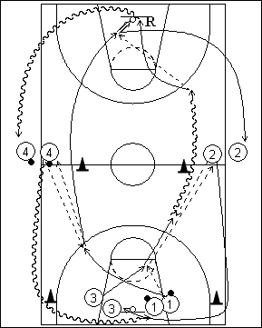

Déroulement
- Quatre files. Les ballons sont dans les files 1 et 4.
- Le premier joueur de la file 1 donne au premier joueur de 3 et passe derrière lui. 3 passe le ballon au premier joueur de 2 qui lui remet aussitôt. Le premier joueur de la file 4 donne à 1 qui lui remet également le ballon. 3 dribble vers le panneau opposé et fait la passe à 1 pour un lay-up.
- 3 réalise le rebond et va dans la file 4. 4 va en dribble dans la file 1. Après son lay-up, 1 va dans la file 2. 2 va en 3.
Coaching points
- C’est un drill d’échauffement. Le rythme est donc normal au départ, puis plus soutenu.
- Tous les joueurs doivent toujours être en mouvement et ce drill peut être réalisé avec un grand nombre de joueurs.
- Insister sur la qualité de TOUTES les passes.